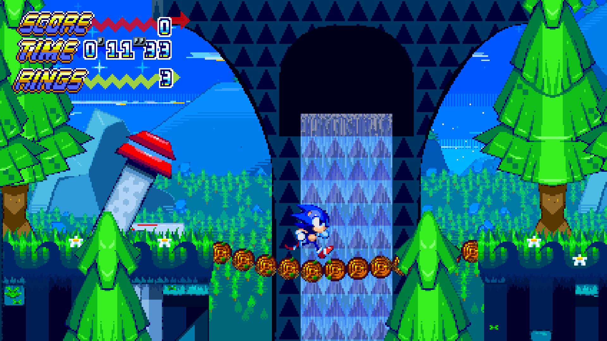
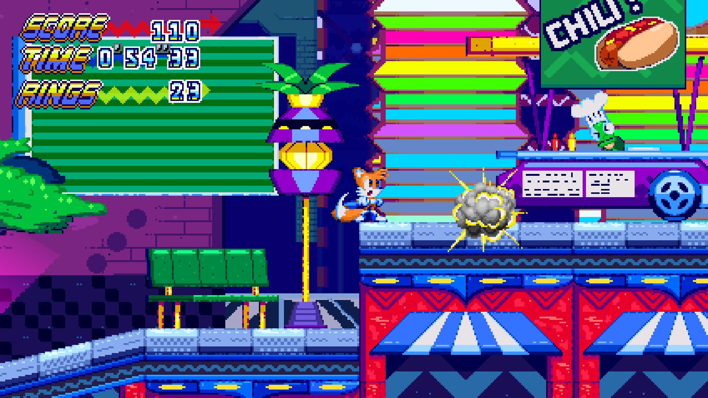
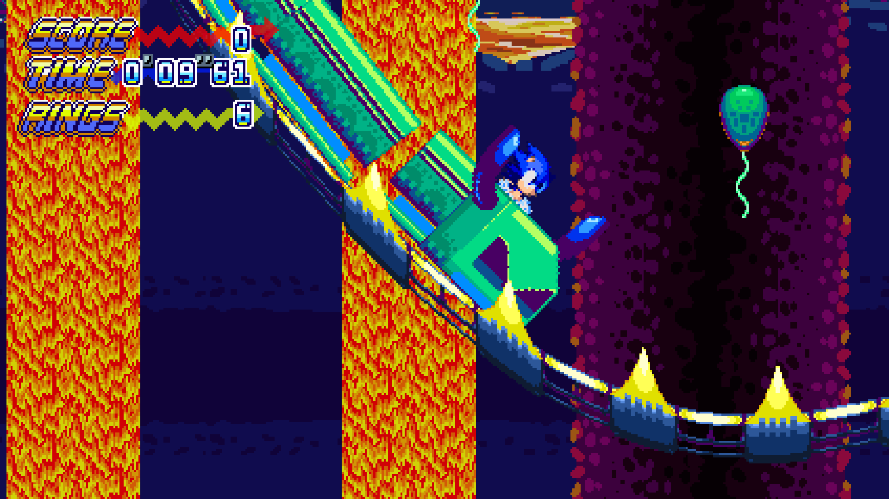
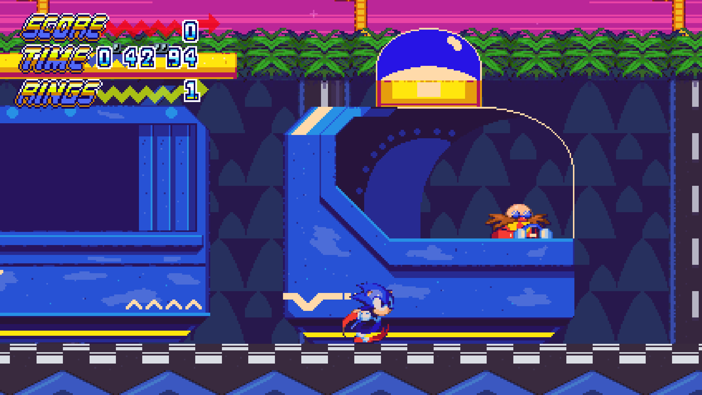
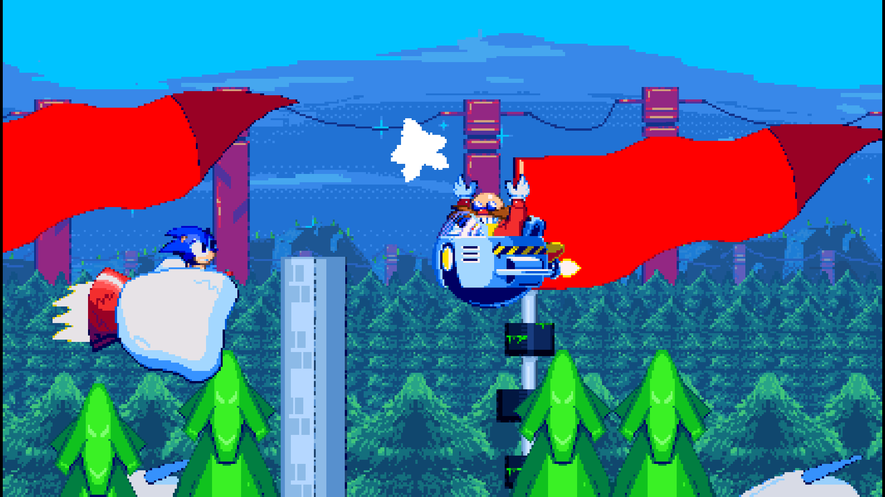
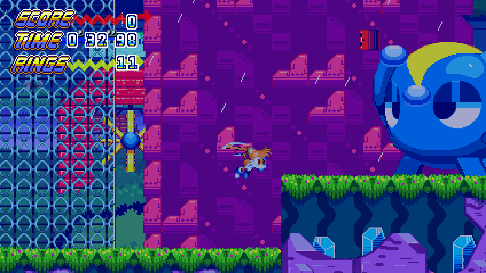

"Una estrella cayo del cielo ese dia..."
Con 7 zonas completas, modo contrareloj y un soundtrack original por Hollie Taylor. Sonic and The Fallen Star fue el primer videojuego completo desarrollado por mi.
Un proyecto de afacionado con el fin de aprender las riendas de el desarrollo de videojuegos.
Detalles
- Genero
- Plataformas
- Estado
- Completado
- Tecnologia / Lenguajes
- Clickteam Fusion
- Lanzamiento
- 2022
Descargas
Mis contribuciones
- Desarollador principal
- Programador
- Artista
Screenshots
-

-




